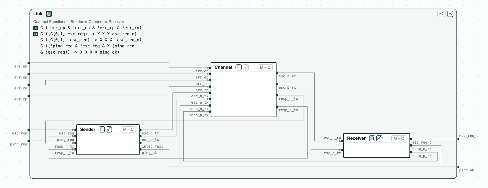
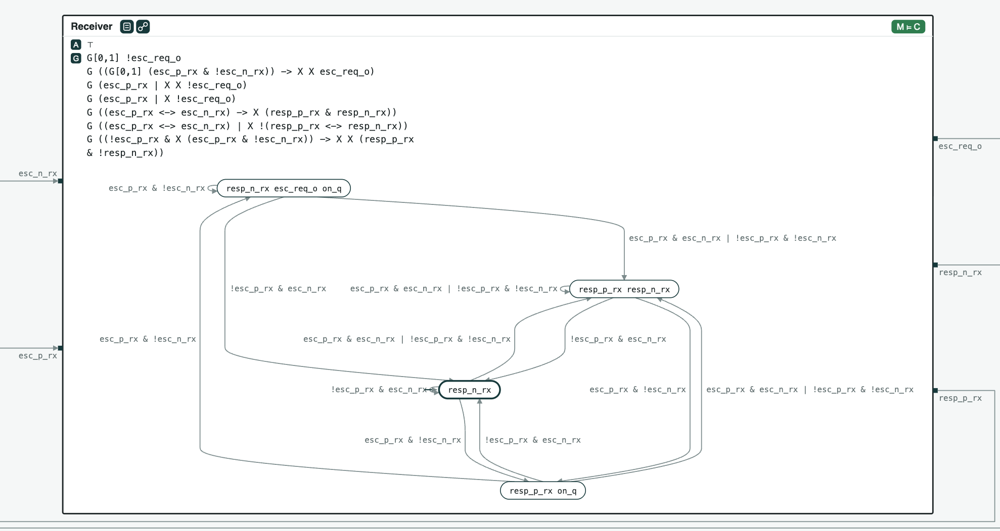
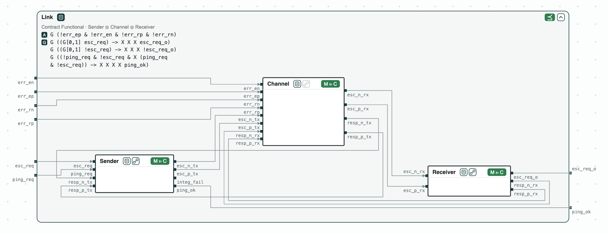
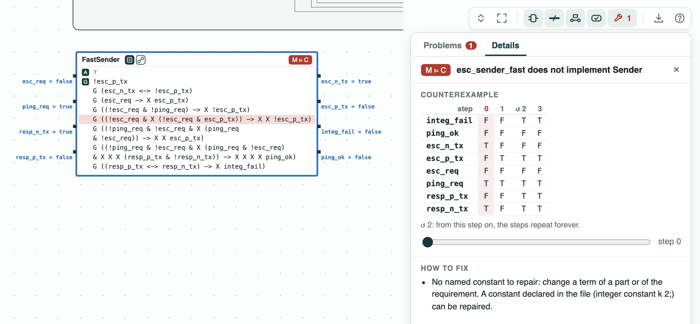

OpenTitan security chip: the escalation link proven module by module from its RTL#
The system. OpenTitan is an open source
security chip. When it detects an attack, an alert handler sends an
escalation (an order to react, for instance to wipe the keys) to a
receiver, over an escalation link. This demo is a small version of that
link: Sender, Channel (the wires), and Receiver, each a Verilog
module. To escalate, the sender raises a differential pair: two wires
with opposite values (esc_p_tx, esc_n_tx), so a single wrong wire
makes them equal, which both ends detect. To ping (test that the receiver
is alive), it sends one-cycle pulses; a pulse of two cycles is an
escalation. The inputs err_ep, err_en, err_rp, err_rn flip one
wire of the channel, to model a fault or an attack. The contracts of the
modules and the two requirements are written in SystemVerilog Assertions,
after the assertions of OpenTitan (prim_esc_rxtx_assert_fpv):
Functional (with no wrong wire, a request held two cycles escalates the
receiver, nothing else does, and a ping is answered) and Integrity (a
single wrong wire is detected). Yosys reads the Verilog into state
machines, and nuXmv checks them.
The question. Does the link meet both requirements, and can we show it by checking each module on its own? Checking modules one by one scales to designs too large to check at once, and a module can then be replaced by any other that meets its contract.


The steps#
The tags on the boxes give the results of the checks: green holds, red fails; Diagrams says how to read them.
Step 1. Each module. The Verilog of the sender, of the channel, and of the receiver implements its contract (M ⊨ C: every behavior of the module meets the contract). The receiver is drawn open: its contract and its state machine of 4 states, read from the Verilog.


Step 2. The link. The contracts of the three modules, composed, refine Functional and Integrity. With step 1, this proves that the link meets both requirements, without a check of the whole design. Checked as a whole, the Verilog of the link meets both too, as it should.


Step 3. A faster sender. A sender that pings at every cycle of a ping request does not implement Sender. In the counterexample, the ping request stays high and so does the pair, which only an escalation may do. The module check finds the fault in the sender alone; in the whole link, the same sender makes the receiver escalate on a ping.


Run it#
pip install "chase-cps[rtl]" # with Yosys
chase-cps install nuxmv --accept-license
python escalation.py --expectThe files of the demo are in the repository; Running the demos says what the scripts print and how to use the diagrams.